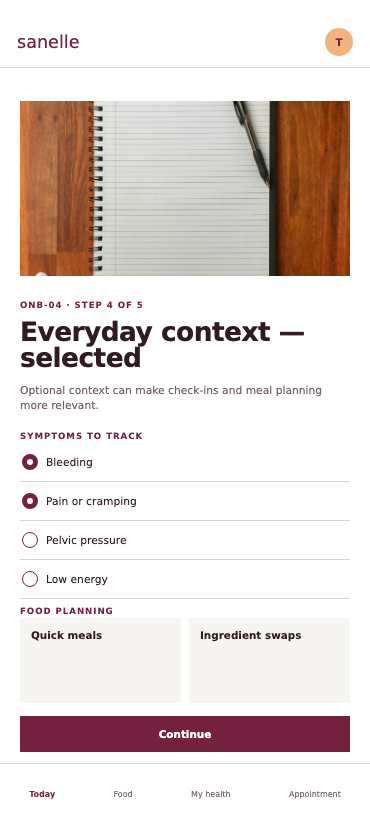
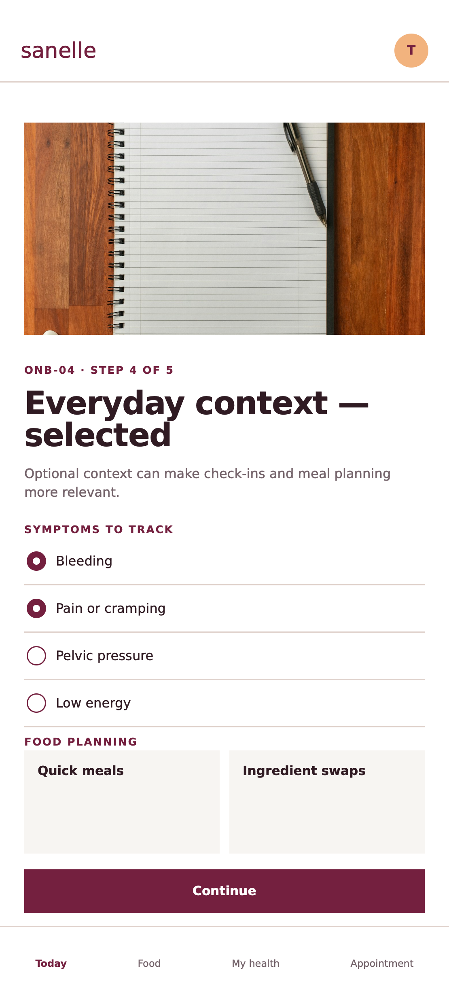
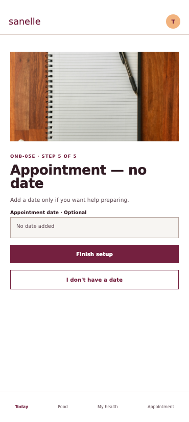
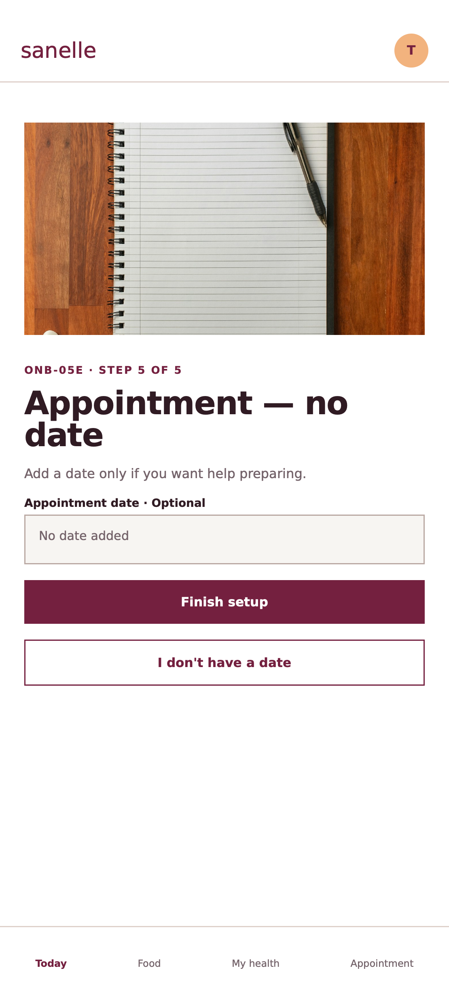
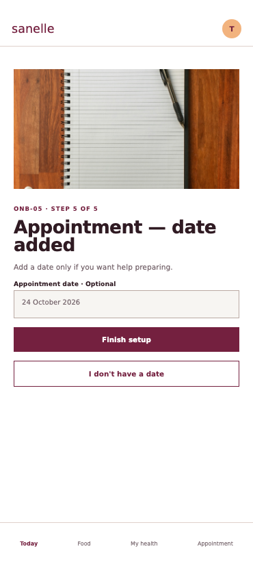
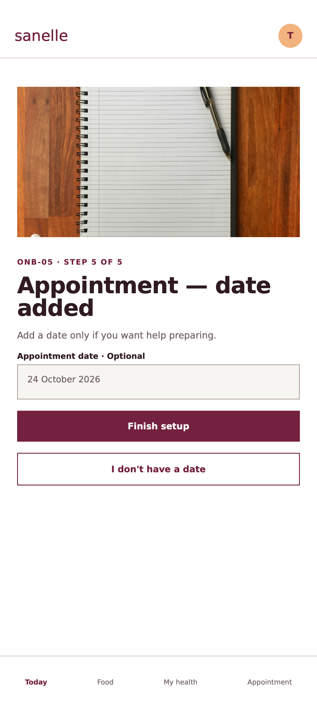

Onboarding — supplied design and working app
Five steps and the Ready to start summary. All 12 supplied onboarding states. Verification methods and results.
The first column renders the corrected handoff at the app viewport size. Each state links to its original, unmodified artboard. The phone bezel and outside annotations are export framing.
ONB-01E · Name — empty


ONB-01 · Name — complete


ONB-01D · Thandi demo loaded


ONB-02E · Priorities — none selected


ONB-02 · Priorities — selected


ONB-03E · Diagnosis details — empty


ONB-03 · Diagnosis details — partial


ONB-04E · Everyday context — empty


ONB-04 · Everyday context — selected
Open the original supplied artboard





ONB-05E · Appointment — no date
Open the original supplied artboard





ONB-05 · Appointment — date added
Open the original supplied artboard




